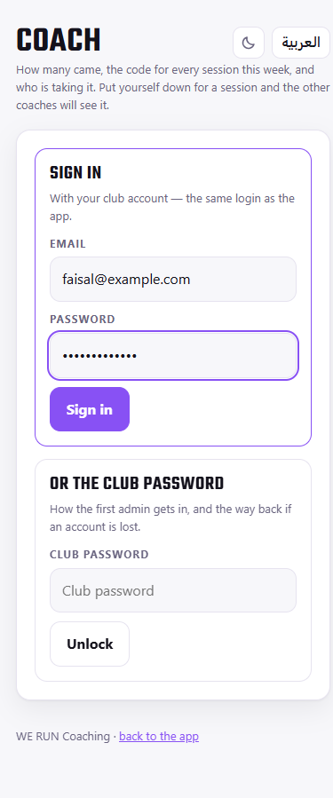
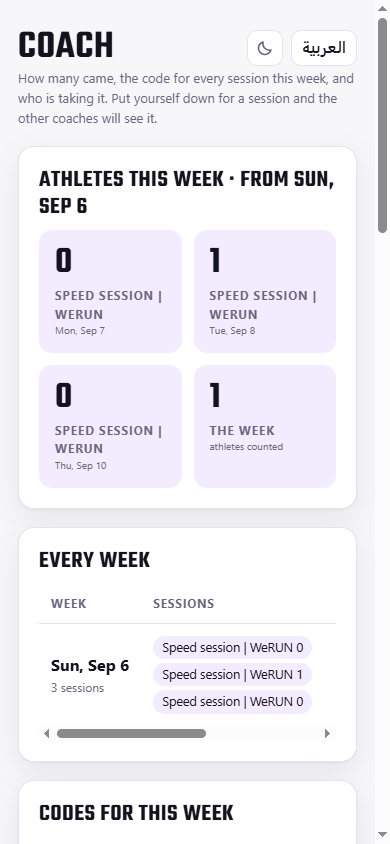
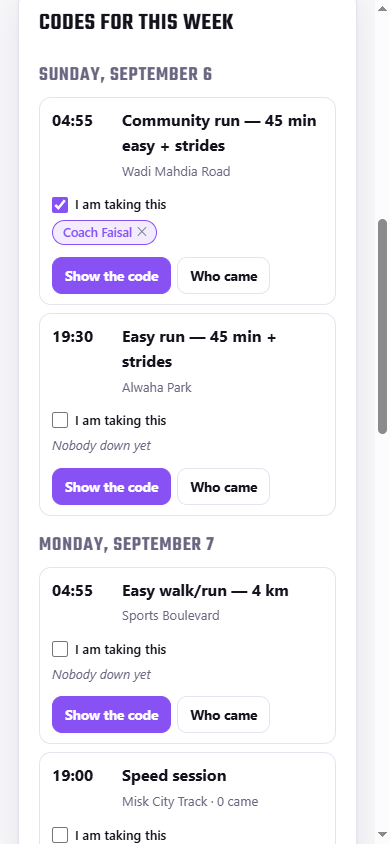
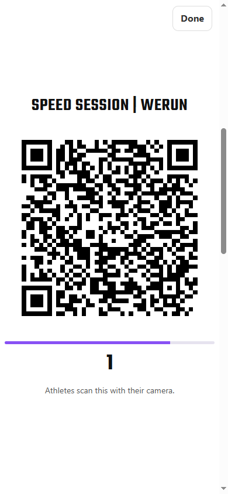
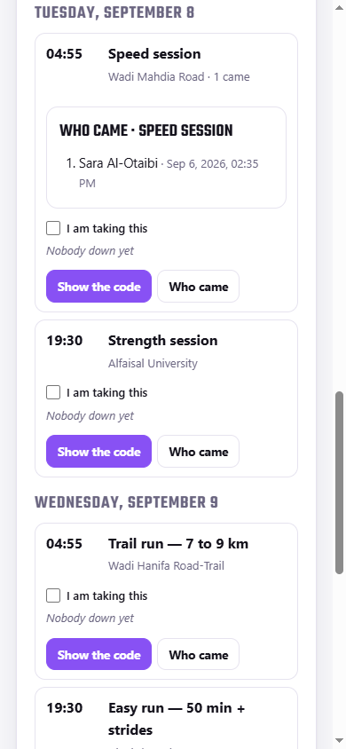
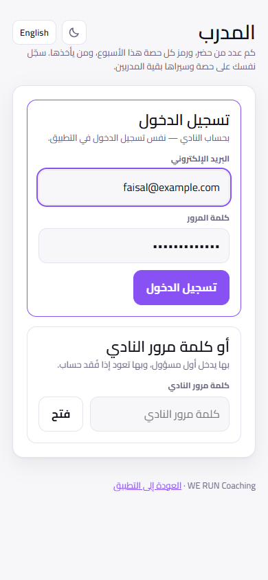
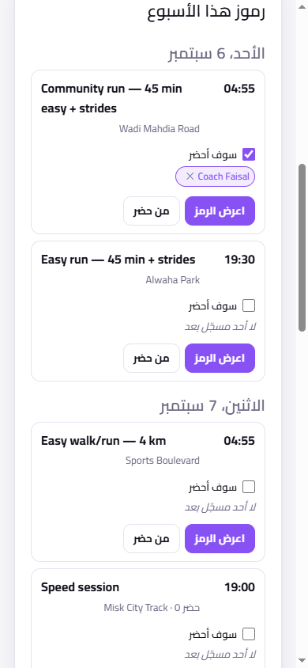
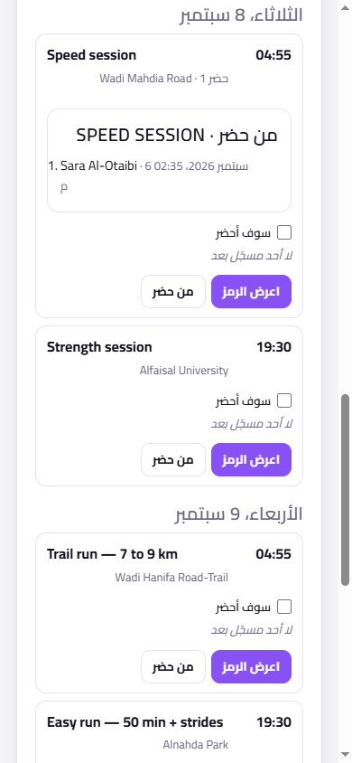

1 · Signing in
- Open weruncoaching.pages.dev/coach on your phone and sign in with your own club account, the same email and password you use in the app. Only coaches get through this door.
- If you are already logged into the app, the Me screen has a button straight to this page.
- The club password under Or the club password is the way back in if an account is ever lost. Use your own account day to day.
- The page has the same two toggles as the app: العربية for Arabic and the moon for dark mode.
2 · What is on the screen
- Athletes this week: the head count for each session, and the club's week-by-week history underneath.
- Codes for this week: every session of the standing week, day by day, with what has already been scanned.
- I am taking this: tick it and your name goes next to the session, so the other coaches can see the week is covered and which day still has nobody on it. Tick it days ahead; the ✕ takes your name off again.
3 · At the track
- Tap Show the code on the session you are taking and hold the phone up. Athletes scan it from the app or with their own camera.
- The code refreshes every 30 seconds, and the bar under it is the countdown. Keep the screen up while people arrive. Do not send a photo of it, because it expires.
- The number under the code is how many have scanned so far, live.
- Who came lists the names and the time each one checked in.
This screen never changes anything. Publishing workouts, editing sessions, voiding a check-in and the club settings all live on /admin, which only the club's admins can open.

Sign in

Athletes this week

Codes · who is taking it

The code · 30s

Who came
١ · تسجيل الدخول
- افتح weruncoaching.pages.dev/coach من جوالك وسجّل الدخول بحسابك في النادي، نفس البريد وكلمة المرور اللذين تستخدمهما في التطبيق. لا يدخل من هذا الباب إلا المدربون.
- إن كنت داخلًا في التطبيق أصلًا، ففي شاشة حسابي زر يوصلك إلى هذه الصفحة مباشرة.
- خانة أو كلمة مرور النادي هي طريق العودة إذا ضاع حساب. أما في العمل اليومي فاستخدم حسابك.
- الصفحة فيها نفس مفتاحي التطبيق: English للغة، والقمر للوضع الليلي.
٢ · ما الذي في الشاشة
- العدّاؤون هذا الأسبوع: عدد الحضور لكل تمرين، وتحته سجل النادي أسبوعًا بأسبوع.
- رموز هذا الأسبوع: كل تمارين الأسبوع الثابت، يومًا بيوم، ومعها ما تم مسحه حتى الآن.
- سوف أحضر: علّم الخانة فيظهر اسمك بجانب التمرين، ليرى بقية المدربين أن الأسبوع مغطّى وأي يوم لم يسجّل عليه أحد. علّمها قبل الموعد بأيام، وعلامة ✕ تزيل اسمك.
٣ · في المضمار
- اضغط اعرض الرمز على التمرين الذي تأخذه وارفع الجوال. يمسحه العدّاؤون من التطبيق أو بكاميرا الجوال.
- الرمز يتجدّد كل ٣٠ ثانية، والشريط تحته هو العدّاد. أبقِ الشاشة مرفوعة أثناء وصولهم، ولا ترسل صورة له لأنها تنتهي صلاحيتها.
- الرقم تحت الرمز هو عدد من سجّل حتى اللحظة، مباشرة.
- من حضر يعرض الأسماء ووقت تسجيل كل واحد.
هذه الشاشة لا تغيّر شيئًا. نشر التمارين وتعديل الجلسات وإلغاء تسجيل حضور وإعدادات النادي كلها في /admin، ولا يفتحها إلا مشرفو النادي.

تسجيل الدخول

الرموز · من يأخذ التمرين
الرمز · ٣٠ ثانية

من حضر